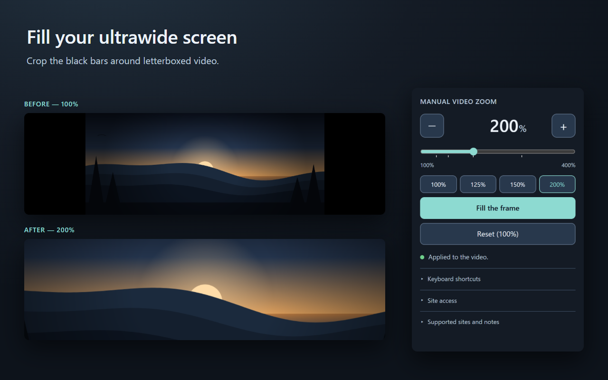

Manual Video Zoom
Manually zoom video to remove the black bars and fill an ultrawide 21:9 or 32:9 screen.

What it does
On a 21:9 or 32:9 monitor almost every film and TV episode ends up inside a narrow strip with
large black areas beside it. This extension enlarges the video until those bars are gone. The
aspect ratio is preserved, so removing the bars crops the edges of the picture — the same
trade-off a television makes when it zooms a 2.39:1 film to fit a 16:9 panel.
- Fill the frame calculates the exact zoom from the video element's own
width and height. The picture itself is never inspected.
- Or set it yourself: type any number from 100 to 400, drag the slider, tap a preset, or
hold −/+ to step by 1%.
Alt+Shift+U / Alt+Shift+J adjust by 1%; Alt+Shift+K
resets. Reassign them at chrome://extensions/shortcuts.- The zoom is remembered per site, on this device.
How it works
It sets three CSS properties — scale, transform-origin and
clip-path — on the page's largest visible <video> element, and
restores the original values on reset. That is the entire mechanism. It does not read, decode,
capture, record or download video, does not interact with DRM or protected media, and does not
bypass or circumvent anything on any website. It is a display setting, not a media tool.
Privacy
No data collection of any kind. There are no network requests in this extension: no
analytics, no telemetry, no advertising, no remote code, no third-party libraries and no build
step. The only thing saved is one number per site, in Chrome's local storage on your device.
The full privacy policy says so in English and Japanese, and the
complete source is unbundled and
unminified so you can check it yourself.
Limits
- Only the largest visible video in the main document. Videos inside iframes or shadow-root
players are not reached, and picture-in-picture is not supported.
- Subtitles rendered as separate HTML elements are not scaled; subtitles burned into the
picture are cropped along with the edges.
- A site's own CSS transforms or clipping can conflict with the zoom.